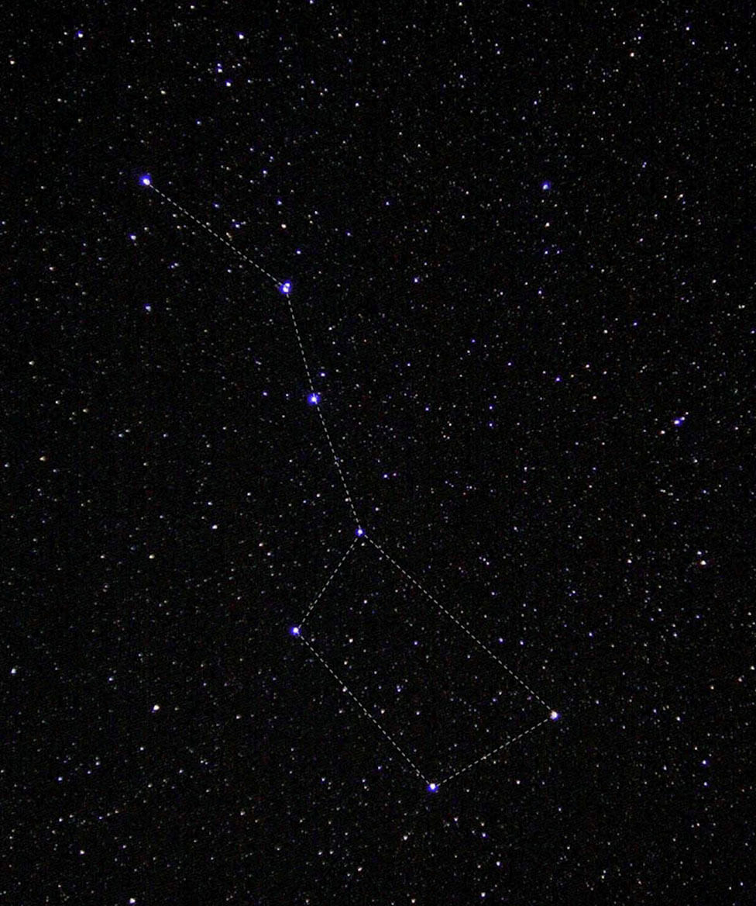
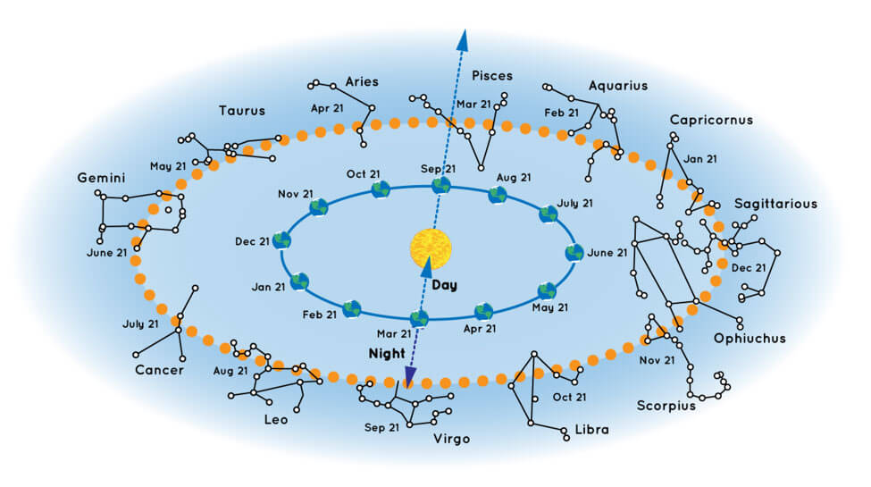

A constellation is a group of stars that looks like a particular shape in the sky and has been given a name. These stars are far away from Earth. They are not connected to each other at all. Some stars in a constellation might be close while others are very far away. But, if you were to draw lines in the sky between the stars like a dot-to-dot puzzle – and use lots of imagination – the picture would look like an object, animal, or person.
Over time, cultures around the world have had different names and numbers of constellations depending on what people thought they saw. Today, there are 88 officially recognized constellations.

What constellations can you see in the night sky?
The constellations you can see at night depend on the time of year. Earth orbits around the Sun once each year. Our view into space through the night sky changes as we orbit. So, the night sky looks slightly different each night because Earth is in a different spot in its orbit. The stars appear each night to move slightly west of where they were the night before.
Your location on Earth also determines what stars and constellations you see, and how high they appear to rise in the sky. The Northern Hemisphere is always pointing in a different direction than the Southern Hemisphere. This means that stargazers in Australia, for example, get a slightly different view of the sky and can see a few different constellations than those in the United States.

It can be a little confusing to picture how the night sky changes as we orbit the Sun. You can see how it all works in the illustration below. Chart showing some of the constellations that are visible from the Northern Hemisphere in different times of year. For example, say you’re in the Northern Hemisphere looking into the night sky on September 21. You’ll probably be able to see the constellation Pisces. But you won’t see Virgo because that constellation is on the other side of the Sun. During that time of year, Virgo’s stars would only be visible during the daytime – but you’d never see them because of the brightness of our Sun.
What’s the difference between astrology and astronomy?
Astronomy is the scientific study of everything in outer space. Astronomers and other scientists study stars and galaxies, most of which are many light-years away from Earth. Studying the scientific properties of these objects in space helps us to understand how the universe was made, what else is out there, and how we fit in. Astrology is not the same thing as astronomy. As a science, astronomy follows the scientific process involving evidence and data. Astrology is based on the belief that the location of certain stars and planets in the sky can predict the future or describe what a person is like. While astrology is important to some cultural traditions, its claims are not based on scientific evidence.
How does NASA use the constellations?
Stars and constellations stay in approximately the same spot for many, many years. They only appear to move in the sky during the year because we are on a moving planet. Because the constellations are in a fixed location, they are often used as landmarks in the sky. Many stars, nebulae, and other objects are named after the constellations they are found in. For example, meteor showers are named for the constellation where the meteors appear to be coming from. So, for example, the Orionids meteor shower, which occurs in October each year, appear to come from the same direction as the constellation Orion the Hunter.
Known stars, such as those in well-known constellations, can also be used to navigate. For centuries, sailors used stars to determine their location when out at sea. This is called celestial navigation. NASA astronauts have also trained to use celestial navigation as a backup in case modern navigation systems have trouble. Robotic spacecraft also use maps of the stars to find their way. They carry a star map in their onboard computers and compare these star maps to patterns of stars in images they take. So, in a way, patterns of stars are as helpful today as they were to ancient navigators.